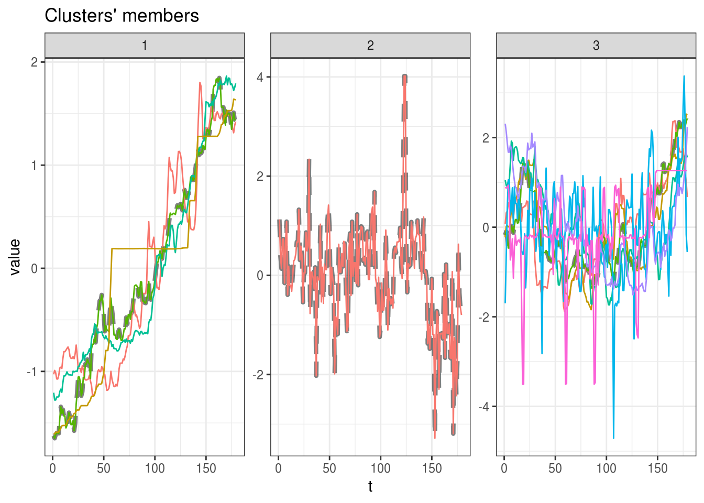
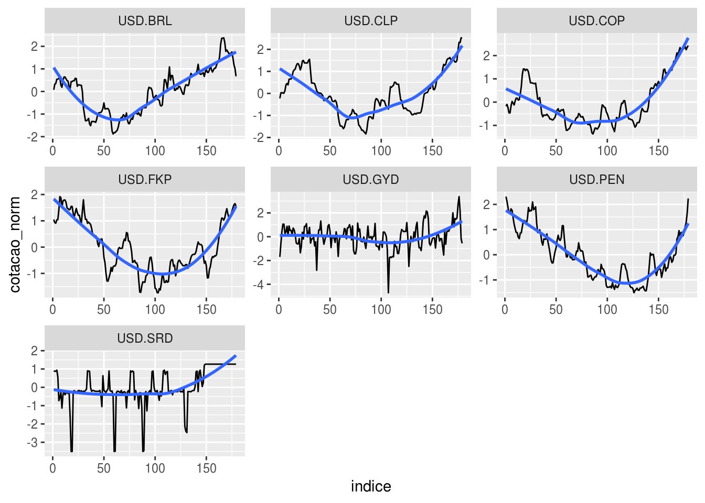

Capítulo 8 Aplicações avançadas em séries temporais: Clusterização
8.1 Motivação
É possível encontrar em diversas fontes, como em livros ou na Internet, ótimos conteúdos sobre Séries Temporais (um bom exemplo é o post no blog do IBPAD sobre algumas dessas referências). Contudo, muitas vezes esses materiais acabam sendo repetitivos, abordando basicamente os mesmos temas: sazonalidade, tendência, ARIMA, forecasting, etc. Isso dificulta ao praticante de séries temporais dar o próximo passo, isto é, avançar em seus estudos sobre o tema e ampliar seu conhecimento. Por isso, este post se destina a apresentar técnicas avançadas em Séries Temporais para você turbinar suas análises.
8.2 Introdução de técnicas avançadas em Séries Temporais
O artigo Time-Series Data Mining, de Esling e Agon (2012), lista algumas técnicas de mineração de dados aplicadas a séries temporais, que são:
- Query by content: localizar padrões conhecidos em um banco de dados de séries temporais;
- Detecção de anomalias: detectar padrões incomuns em séries, como possíveis fraudes em transações financeiras;
- Descoberta de motifs: descobrir subsequências dentro de uma série temporal que se repetem em cadeias discretas;
- Classificação: distinguir séries temporais em rótulos ou classes conhecidas;
- Segmentação: Criar uma representação reduzida da série temporal;
- Previsão: estimar valores futuros baseado em valores passados da série;
- Clusterização: agrupar diferentes séries temporais em clusteres similares entre si.
Todas essas técnicas podem ser implementadas no R graças a pacotes disponibilizados gratuitamente. Cada um desses tópicos renderia um (ou mais) post, portanto vou focar no momento apenas em clusterização.
8.3 Clusterização de séries temporais
Clusterização é o processo de descobrir grupos, chamados de clusteres, em um conjunto de dados. O objetivo é determinar os clusteres mais homogêneos possíveis, isto é, os grupos em que os elementos sejam mais similares a elementos do mesmo cluster e mais diferentes de elementos de clusteres diferentes. Por exemplo, seria o mesmo que detectar, em uma loja de varejo, quais produtos são sazonais de verão ou de inverno baseado em suas séries de demanda.
Uma excelente maneira de aprender mais sobre clusterização de séries temporais é lendo a documentação do pacote dtwclust, que implementa vários algoritmos conhecidos de clusterização.
Neste post, iremos demonstrar como é possível encontrar grupos naturais analisando dados cambiais. Ou seja, a pergunta que se deseja responder é: Existem padrões naturais na variação cambial de moedas de países da América do Sul em relação ao dólar?
8.4 Demonstração
8.4.1 Obtenção dos dados
Para esta análise, serão usados os seguintes pacotes:
library(tidyverse)
library(dtwclust) # clusterizacao de series temporaisAbaixo, eu defino manualmente as moedas que serão usadas na análise:
moedas <- c("USD/ARS", "USD/VEF", "USD/BOB",
"USD/BRL", "USD/CLP", "USD/COP",
"USD/FKP", "USD/PYG", "USD/GYD",
"USD/PEN", "USD/UYU", "USD/SRD")Vamos então, de maneira iterativa para cada uma das moedas do vetor definido acima, obter a série temporal da cotação dos últimos 180 dias e salvar os resultados em uma lista:
df_moedas <- readr::read_csv("https://raw.githubusercontent.com/sillasgonzaga/curso_series_temporais/master/data/moedas.csv")8.4.2 Transformação dos dados
# olhando os dados obtidos
df_moedas %>% head() %>% knitr::kable()| data | USD.ARS | USD.VEF | USD.BOB | USD.BRL | USD.CLP | USD.COP | USD.FKP | USD.PYG | USD.GYD | USD.PEN | USD.UYU | USD.SRD |
|---|---|---|---|---|---|---|---|---|---|---|---|---|
| 2018-12-05 | 37.51049 | 15701661 | 6.925374 | 3.858582 | 671.4947 | 3169.583 | 0.785610 | 5910.327 | 208.4773 | 3.381996 | 32.09173 | 7.456294 |
| 2018-12-06 | 37.62264 | 16219400 | 6.920337 | 3.884084 | 674.9416 | 3175.373 | 0.784250 | 5907.212 | 208.8974 | 3.377670 | 32.01777 | 7.456214 |
| 2018-12-07 | 37.55145 | 18811618 | 6.918612 | 3.887892 | 675.1803 | 3164.734 | 0.783959 | 5911.780 | 209.2960 | 3.371920 | 32.01822 | 7.456286 |
| 2018-12-08 | 37.37790 | 18807870 | 6.922675 | 3.907325 | 674.7750 | 3147.050 | 0.785472 | 5913.850 | 209.5450 | 3.366975 | 32.04850 | 7.456500 |
| 2018-12-09 | 37.37573 | 18808205 | 6.922675 | 3.907326 | 674.7784 | 3147.038 | 0.785546 | 5913.850 | 209.5450 | 3.366978 | 32.04850 | 7.454875 |
| 2018-12-10 | 37.48558 | 19432307 | 6.916634 | 3.911653 | 676.4515 | 3170.546 | 0.790034 | 5913.295 | 209.2420 | 3.370476 | 32.05107 | 7.448992 |
Veja que os dados possuem escalas distintas: existem moedas em que um dólar vale quase 3000 unidades dela. Para garantir que todas as moedas tenham o mesmo peso no algoritmo de clusterização, precisamos transformar os valores em uma mesma escala normalizada:
# aplicar a funcao de normalizacao excluindo a coluna de data
moedas_norm <- scale(df_moedas[,-1])
moedas_norm %>% head() %>% knitr::kable()| USD.ARS | USD.VEF | USD.BOB | USD.BRL | USD.CLP | USD.COP | USD.FKP | USD.PYG | USD.GYD | USD.PEN | USD.UYU | USD.SRD |
|---|---|---|---|---|---|---|---|---|---|---|---|
| -1.0282445 | -1.607223 | 1.1267706 | 0.0766651 | -0.2252835 | -0.1745677 | 1.0479646 | -1.623902 | -1.6996649 | 2.311189 | -1.206810 | 0.8911261 |
| -0.9904478 | -1.604254 | 0.3876272 | 0.3200150 | 0.0211982 | -0.1001450 | 0.9343644 | -1.648057 | -0.6156920 | 2.128018 | -1.277388 | 0.8733557 |
| -1.0144396 | -1.589390 | 0.1344959 | 0.3563524 | 0.0382677 | -0.2368854 | 0.9100573 | -1.612632 | 0.4127039 | 1.884551 | -1.276965 | 0.8893491 |
| -1.0729300 | -1.589411 | 0.7307118 | 0.5417895 | 0.0092881 | -0.4641859 | 1.0364375 | -1.596585 | 1.0551915 | 1.675170 | -1.248066 | 0.9368849 |
| -1.0736604 | -1.589409 | 0.7307118 | 0.5417991 | 0.0095336 | -0.4643412 | 1.0426187 | -1.596585 | 1.0551915 | 1.675297 | -1.248066 | 0.5759236 |
| -1.0366391 | -1.585831 | -0.1557613 | 0.5830890 | 0.1291779 | -0.1621893 | 1.4174996 | -1.600888 | 0.2733398 | 1.823409 | -1.245610 | -0.7308674 |
Com os dados normalizados, podemos então prosseguir com a análise.
8.4.3 Aplicação da clusterização
Primeiramente, é possível encontrar clusteres naturais apenas no olho, sem a ajuda de nenhum algoritmo? Para responder a isso, vamos fazer um gráfico no ggplot2:
moedas_norm %>%
as.data.frame() %>%
# transformar data frame em formato tidy (long)
mutate(ind = row_number()) %>%
gather(moeda, cotacao_norm, -ind) %>%
ggplot(aes(x = ind, y = cotacao_norm)) +
geom_point() +
geom_smooth(method = "loess", se = FALSE) +
facet_wrap(~ moeda, scale ="free_y")
A maioria dos algoritmos de clusterização requer que a quantidade de clusteres seja definida pelo usuário. Olhando o gráfico acima, aparentemente, é possível dizer qeue existem três grupos naturais entre essas séries: as que apresentam tendência crescente, decrescente e as demais. Vamos então clusterizar a série em três grupos:
modelo <- tsclust(t(moedas_norm),
k = 3,
distance = "dtw_lb",
centroid = "pam",
seed = 123,
trace = TRUE,
control = partitional_control(pam.precompute = FALSE),
args = tsclust_args(dist = list(window.size = 20L)))## Iteration 1: Changes / Distsum = 12 / 685.6634
## Iteration 2: Changes / Distsum = 1 / 617.6525
## Iteration 3: Changes / Distsum = 1 / 614.9333
## Iteration 4: Changes / Distsum = 0 / 614.9333
##
## Elapsed time is 2.468 seconds.modelo## partitional clustering with 3 clusters
## Using dtw_lb distance
## Using pam centroids
##
## Time required for analysis:
## user system elapsed
## 1.177 1.308 2.468
##
## Cluster sizes with average intra-cluster distance:
##
## size av_dist
## 1 4 27.39003
## 2 1 0.00000
## 3 7 72.19618plot(modelo)O que você achou do resultado dos clusteres?
8.4.4 E o Brasil?
Em qual cluster o Real foi alocado?
# descobrir cluster do Real
(cl_br <- (modelo@cluster[which(colnames(moedas_norm) == "USD.BRL")]))## [1] 3# contar quantos paises ficaram no mesmo cluster do Brasil
colnames(moedas_norm)[which(modelo@cluster == cl_br)]## [1] "USD.BRL" "USD.CLP" "USD.COP" "USD.FKP" "USD.GYD" "USD.PEN" "USD.SRD"Vamos então destacar essas moedas em um gráfico só:
# filtrar paises do mesmo cluster
cl_br <- as.data.frame(moedas_norm[, which(modelo@cluster == cl_br)])
cl_br %>%
mutate(indice = 1:n()) %>%
gather(moeda, cotacao_norm, -indice) %>%
ggplot(aes(x = indice, y = cotacao_norm)) +
geom_line() +
geom_smooth(se = FALSE) +
facet_wrap( ~ moeda, scales = "free")## `geom_smooth()` using method = 'loess' and formula 'y ~ x'
De fato, o comportamento entre as séries é relativamente parecido.